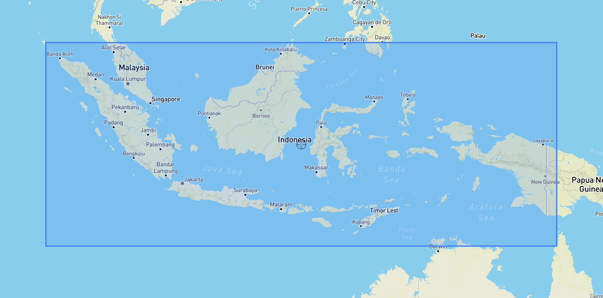

IMERG data acquisition
About the data
WGS84 - EPSG:4326
-
Bounding box
94,-12,142,7 -
GeoJSON
{"type":"FeatureCollection","features":[{"type":"Feature","properties":{},"geometry":{"type":"Polygon","crs":"EPSG:4326","coordinates":[[[94,-12],[94,7],[142,7],[142,-12],[94,-12]]]}}]}

Historical
| Timestep | Release | Period | Unit | Link |
|---|---|---|---|---|
| Daily | Final Run | 1 Jun 2000 - 30 Jun 2020 | mm/day | https://gpm1.gesdisc.eosdis.nasa.gov/data/GPM_L3/GPM_3IMERGDF.06/ |
| Daily | Late Run | 1 Jul 2000 - now | mm/day | https://gpm1.gesdisc.eosdis.nasa.gov/data/GPM_L3/GPM_3IMERGDL.06/ |
Near-real time
| Timestep | Release | Period | Unit | Link |
|---|---|---|---|---|
| 30-minutes | Final Run | 1 Jan 2020 - 30 Jun 2020 | mm/hour | https://gpm1.gesdisc.eosdis.nasa.gov/data/GPM_L3/GPM_3IMERGHH.06/ |
| 30-minutes | Early Run | 1 Jul 2020 - now | mm/hour | https://gpm1.gesdisc.eosdis.nasa.gov/data/GPM_L3/GPM_3IMERGHHE.06/ |
Download and subset for Indonesia via OpenDAP
Using wget, see https://disc.gsfc.nasa.gov/data-access#mac_linux_wget
wget --http-user=[USERNAME] --http-password=[PASSWORD] --load-cookies ~/.urs_cookies --save-cookies ~/.urs_cookies --keep-session-cookies --no-check-certificate --auth-no-challenge=on -r --reject "index.html*" -np -e robots=off <insert complete HTTPS OPENDAP URL>
username: gis.wfp.indonesia
password: Send email to benny.istanto@wfp.org to get the password
OPENDAP URL: for 1 Jan 2019, check the data catalog from url on the left column. https://gpm1.gesdisc.eosdis.nasa.gov/opendap/hyrax/GPM_L3/GPM_3IMERGHH.06/2019/001/3B-HHR.MS.MRG.3IMERG.20190101-S003000-E005959.0030.V06B.HDF5.nc4?precipitationCal[0:0][2740:3219][779:969],time,lon[2740:3219],lat[779:969]
GPM_3IMERGHH.06 - Code of product. Notes: NASA frequently update the version of data, current version is 06. If the download failed, change into new version 07 or 08 and so on.
2019 - year in YYYY
001 - Date in Julian Date for 30min data
3B-HHR.MS.MRG.3IMERG.20190101-S003000-E005959.0000.V06B.HDF5.nc4 - filename
-
3B-HHR.MS.MRG.3IMERG - product code for 30min final run
-
3B-HHR-E.MS.MRG.3IMERG - product code for 30min early run
-
20190101-S003000-E005959.0000 - Date and time information, each file has a unique information, check the pattern in data source.
-
Start Date/Time: All files in GPM will be named using the start date/time of the temporal period of the data contained in the product. The field has two subfields separated by a hyphen.
-
Start Date: YYYYMMDD Start Time: Begin with Capital S and follow with HHMMSS
-
End Time: Begin with Capital E and follow with HHMMSS Hours are presented in a 24-hour time format, with
00indicating midnight. All times in GPM will be in Coordinated Universal Time (UTC). The half-hour sequence starts at 0000, and increments by 30 for each half hour of the day. -
V06B - version of data. Frequently change
-
HDF5 - Original format of the data
-
nc4 - Data format after subsetting process using OPENDAP
precipitationCal - Selected variable to download
[0:0][2740:3219][779:969],time,lon[2740:3219],lat[779:969] - time and bounding-box from original to subset for Indonesia.
Conversion NC to GeoTIFF, and clip using polygon
All downloaded subset IMERG are in netCDF format. We need to convert it to GeoTIFF, the easiest way is using GDAL:
gdal_translate -of GTiff -a_srs EPSG:4326 NETCDF:"filename.nc4":precipitationCal fileoutput.tif
But sometimes GDAL couldn’t handle rotated poled grid from subset netCDF, we could try rioxarray based on solution from https://gis.stackexchange.com/a/367651
Then we need to crop the GeoTIFF using Indonesia boundary. GDAL can handle this task:
gdalwarp --config GDALWARP_IGNORE_BAD_CUTLINE YES -srcnodata -999 -dstnodata NoData -cutline idn_bnd_subset_clip_imerg_grid_a.shp -crop_to_cutline input.tif clip_output.tif